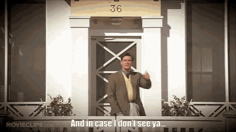

Welcome to my website!As you go through the website you will learn about me, my interests, why software engineering, and have the ability to contact me with your thoughts!Have an incredible day!
I have done many things that lead me to the point of wanting to become a software engineer!My past with playing baseball for 15 years helped me out with being a team player and to work well with others.Playing the drums & guitar helped me explore my creativity and learn the true joy of creating something out of nothing!Years of playing video games, trying out different things with the computer, and seeing the back end side of things while loving all of it!Lead me to be where I am now studying at the Flatiron School on a part time basis to delve deeper into this passion I have aquired!I could not be happier or more excited to grow and see how much I will learn. Most excitingly being able to be creative with it all!
I have two very amazing pets. One that lives with me and the other that lives with my family!
I play quite a lot of video games from FPS, MOBA, MMO, and RPG I enjoy it all.Here are a few of my favorite games ,and a little about them!
Music has been a main love of mine throughout my life!Being able to listen, play, and write have been the hobby that enjoy most because I am able to create. Here you will learn a little about what I play and what music I enjoy!
Nice you made it to the end and now you know me a little better!Unless you clicked on the contact me and went straight here in which case you missed out!If you have any questions about the website, me, or just want to talk music & games go ahead and email me!